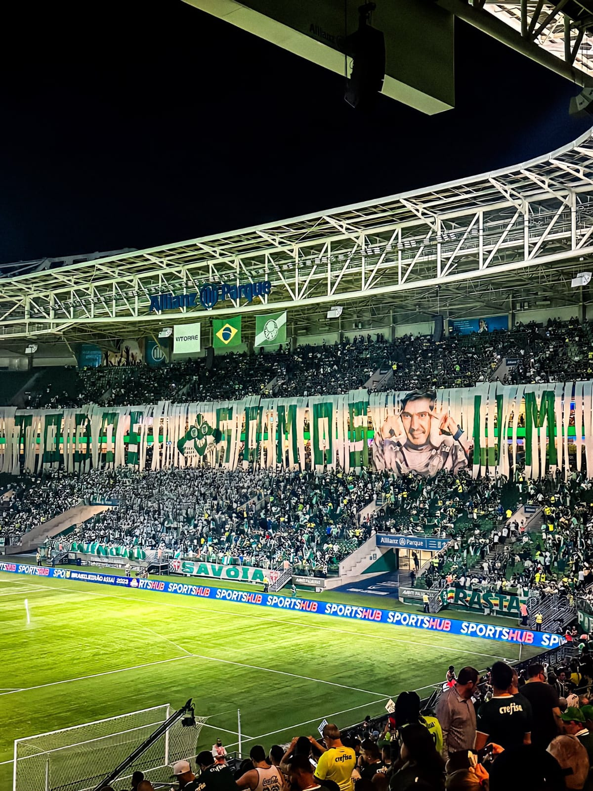

| Home | História | Títulos | |
 |
Sociedade Esportiva Palmeiras, conhecida popularmente como Palmeiras, é um clube poliesportivo brasileiro da cidade de São Paulo. Foi fundado em 26 de agosto de 1914, como Palestra Itália. Tem como modalidade esportiva principal o futebol, como um dos clubes mais vencedores e de maior relevância de todo o continente, além de estar entre aqueles com maior torcida do país. |
||
| Torcedor(a): | Palmeirense, palestrino | ||
| Mascotes: | Porco, Periquito | ||
| Principal rival: | Corinthians, São Paulo, Santos | ||
| Fundação: | 26 de agosto de 1914; há 109 anos | ||
| Estádio: | Allianz Parque | ||
| Localização: | São Paulo, São Paulo, Brasil | ||
| Presidente: | Leila Pereira | ||
| Treinador: | Abel Ferreira |
| Mancha Verde | |||
| (Maior Torcida Organizada do Palmeiras) | |||
| A Mancha Verde foi fundada no dia 11 de janeiro de 1983, resultado da fusão de três antigas torcidas organizadas (Império Verde, Inferno Verde e Gremio Alviverde). Na época sentia-se a necessidade de se organizar uma nova e sólida representação para a torcida palmeirense nas arquibancadas.
O nome "Mancha Verde" é baseado em um dos vilões das revistas em quadrinhos Disney, mancha Negra. Um dos objetivos da então nova torcida era resgatar o respeito á torcida palmeirense, que entre o fim dos anos 1970 e o início dos anos 1980, era perseguida por torcidas de clubes rivais, que muitas vezes agrediam torcedores que não faziam parte de agremiações organizadas.
|
| Mascotes do Palmeiras |
| O periquito é o primeiro mascote oficial da Sociedade Esportiva Palmeiras. Adotado ainda em 1917 pelos torcedores do Palestra Itália, quando o time passou a se vestir totalmente de verde, o apelido também se origina no fato de que existiam muitas aves deste tipo nos bosques do Parque Antarctica. |
| Após 30 anos de adoração pela torcida nas arquibancadas, o Porco Gobbato foi oficializado como mascote do clube em 2016, ganhando uma forma robusta e imponente e passando a animar os jogos do Verdão ao lado do Periquito. A origem do mascote remete á forma pejorativa pela qual os palmeirenses eram chamados pelos rivais. Após quase duas décadas sentindo-se ofendida com o apelido, a torcida decidiu adotar o mascote durante uma partida contra o Santos, pelo Brasileiro de 1986, com gritos de "E dá-lhe Porco, e dá-lhe Porco, olê, olê, olê!". Pouco depois, naquele mesmo ano, a revista Placar "oficializou" o mascote da torcida ao estampar em sua capa o meia Jorginho Putinatti, símbolo daquela geração, segurando um porco no colo. |
 |
| Allianz Parque |
| Allianz Parque é uma arena multiuso construìda para receber espetáculos, concertos, eventos corporativos e, principalmente, partidas de futebol do Palmeiras, seu proprietário. A nova arena foi construída onde se localizava o tradicional Estádio Palestra Itália, também conhecido popularmente como Parque Antarctica. |
|  |
| Abel Ferreira |
| (Atual Técnico do Palmeiras) |
| Abel Fernando Moreira Ferreira (Penafiel, Portugal, 22 de dezembro de 1978), atualmente comanda o Palmeiras, sendo considerado por jornalistas e figuras esportivas como um dos maiores e mais vitoriosos técnicos da história do Palmeiras. Abel Ferreira é um dos três treinadores que conquistaram a tríplice coroa clássica (principal copa continental, (campeonato nacional e copa nacional) por um mesmo clube brasileiro, feito que obteve dirigindo o Palmeiras. Abel comandou a equipe alviverde nos títulos das Copas Libertadores da américa de 2020 e 2021, da Copa do Brasil de 2020, da Recopa Sul-Americana de 2022, dos Campeonatos Brasileiros de 2022 e 2023, da Supercopa do Brasil de 2023, além dos Campeonatos Paulistas de 2022 e 2023. Com nove títulos no total, é o segundo técnico mais vitorioso da hístoria do Verdão, atrás apenas de Osvaldo Brandão, com dez títulos. |
| Atual Uniforme do Palmeiras |
| Lançada em janeiro deste ano, a camisa HOME do Palmeiras para esta temporada já fez história. Bastante elogiado pelos torcedores palestrinos, o manto saiu do território nacional para ganhar o mundo: foi eleito o melhor do planeta em votação realizada pelo site Footy Headlines, portal especializado em uniformes. As novas camisas para a temporada de 2024 refletem um time consolidado e coroado diversas vezes, um grupo batizado como Terceira Academia, que continua somando conquistas.
Pela primeira vez dividindo a mesma estampa, os uniformes HOME e AWAY apresentam três emblemas históricos do Palmeiras, em referência aos 110 anos que serão completados em 2024. O primeiro escudo do Palestra Italia (criado em 1914) aparece de forma inédita na história dos uniformes do clube. Completam os escudos a Cruz de Savoia (1916), símbolo da Casa Real Italiana, e o P (1942), que foi o primeiro escudo a refletir a mudança do nome do time para Palmeiras. O atual distintivo, utilizado desde 1959, segue estampado no peito. |